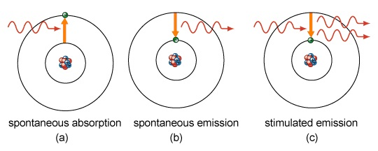
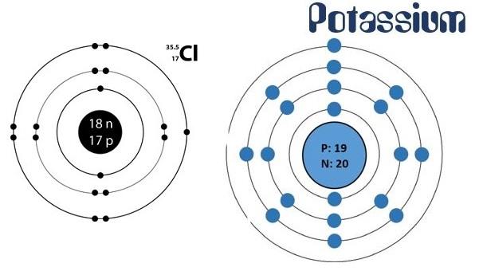

Q.4 : विभिन्न कक्षों में इलेक्ट्रॉनों के भरे जाने की बोर-बरी प्रणाली समझाइए
उत्तर - बोर का परमाणु मॉडल। (Bohr's Atomic Model)- रदरफोर्ड के ‘परमाणु मॉडल की कमियों को स्पेनिश वैज्ञानिक नील्स बोर ने प्लैंक के क्वाण्टम सिद्धांत (Planck's quantum theory) की सहायता से दूर किया। बोर ने परमाणु संरचना के सम्बन्ध में निम्नलिखित अभिगृहीत प्रस्तुत किये -
(i) प्रत्येक परमाणु के इलेक्ट्रॉन नाभिक के चारों ओर केवल कुछ विशिष्ट कक्षाओं (orbits) में ही घूम सकते हैं। इन कक्षाओं में इलेक्ट्रॉन बिना ऊर्जा खोये गति करते रहते हैं। इन विशिष्ट ऑर्बिटों को इलेक्ट्रॉन की स्थिर अवस्थाएँ या ऊर्जा स्तर (stationary states or energy levels) कहते हैं। इन कक्षाओं में घूमते समय इलेक्ट्रॉन ऊर्जा का अवशोषण या विकिरण (diffusion) नहीं करते अर्थात् इलेक्ट्रॉन में त्वरण होता है किन्तु ऊर्जा उत्पन्न नहीं होती। इस प्रकार स्थिर अवस्था में इलेक्ट्रॉन से एक निश्चित ऊर्जा संलग्न रहती है।
(ii) प्रत्येक इलेक्ट्रॉन का अपनी ऊर्जा के अनुसार एक निश्चित ऑर्बिट होता है। किसी । विशिष्ट ऑर्बिट में घूमते समय इलेक्ट्रॉन की ऊर्जा का क्षय (dissipation) नहीं हो पाता है। जब इलेक्ट्रॉन किसी एक ऑर्बिट से दूसरे ऑर्बिट में जाता है तो उसकी ऊर्जा में परिवर्तन होता है। ऊर्जा परिवर्तन के अनुसार यह अपनी कक्षा वदल लेता है अर्थात् अगले ऊर्जा स्तर अथवा पिछले ऊर्जा स्तर में चला जाता है। यदि इलेक्ट्रॉन एक चक्र में नाभिक से दूर वाली कक्षा में जाता है, तो ऊर्जा अवशोषित होती है और जब वह दूर वाली कक्षा से निकट वाली कक्षा में आता है, तो ऊर्जा विकिरित होती है।
(iii) ऊर्जा का अवशोषण ऊष्मा या प्रकाश के रूप में होता है। इस प्रकार किसी भी इलेक्ट्रॉन के लिए एक से अधिक कक्षाओं का होना सम्भव है अर्थात् इलेक्ट्रॉन एक से अधिक कक्षाओं में घूम तो सकता है किन्तु नाभिक में गिरता नहीं है। प्रत्येक कक्षा में ऊर्जा के निश्चित क्वाण्टम होते हैं। ऊर्जा परिवर्तन की न्यूनतम राशि क्वाण्टम होती है। ।

विभिन्न कक्षाओं में इलेक्ट्रॉन वितरण की बोर-बरी व्यवस्था (Bohr-Burry Scheme of Electron Distribution in Different Orbits)- परमाणु की किसी कक्षा में अधिकतम इलेक्ट्रॉन संख्या 2n2 हो सकती है जिसमें n उस कक्षा की क्रम संख्या या मुख्य क्वाण्टम संख्या है। अतः विभिन्न कक्षाओं में इलेक्ट्रॉन वितरण निम्नलिखित प्रकार से है -
(i) प्रथम (K) कक्षा में इलेक्ट्रॉन की अधिकतम संख्या = 2x12 =2
द्वितीय (L) कक्षा में इलेक्ट्रॉन की अधिकतम संख्या = 2x22 =8
तृतीय (M) कक्षा में इलेक्ट्रॉन की अधिकतम संख्या = 2x32 = 18
चतुर्थ (N) कक्षा में इलेक्ट्रॉन की अधिकतम संख्या = 2x42 =32
(ii) सबसे बाहरी कक्षा में अधिक से अधिक 8 इलेक्ट्रॉन और उसके पहली वाली कक्षा में 18 इलेक्ट्रॉन हो सकते हैं।
(ii) यह आवश्यक नहीं है कि किसी कक्षा में इलेक्ट्रॉन संख्या 2n2 के अनुसार पूरी हो जाये तभी अगली कक्षा में इलेक्ट्रॉन प्रवेश करें।
(iv) जब किसी कक्षा में 8 इलेक्ट्रॉन पूरे हो जाते हैं तब अगली कक्षा में इलेक्ट्रॉन प्रवेश कर सकते हैं।
(v) सबसे बाहरी कक्षा में 2 इलेक्ट्रॉन और उससे अगली कक्षा में 9 इलेक्ट्रॉन से अधिक तब तक नहीं होंगे जब तक उसके पहली वाली कक्षा में नियमानुसार इलेक्ट्रॉन पूर्ण न हों।
कुछ तत्वों की परमाणु संरचना तथा इलेक्ट्रॉन वितरण निम्नलिखित है -
(i) क्लोरीन परमाणु
क्लोरीन का परमाणु क्रमांक = 17
क्लोरीन का परमाणु भार = 35
अतः, प्रोटॉन की संख्या = 17
इलेक्ट्रॉन की संख्या = 17
न्यूट्रॉनों की संख्या = (35-17)= 18
अतः क्लोरीन परमाणु के नाभिक में 17 प्रोटॉन तथा, 18 न्यूट्रॉन होंगे। इसकी प्रथम कक्षा (K) में 2, दूसरी कक्षा (L) में 8 तथा तीसरी कक्षा (M) में 7 इलेक्ट्रॉन होंगे।

(ii) पोटैशियम परमाणु
परमाणु क्रमांक = 19
परमाणु भार = 39 अतः,
प्रोटॉन की संख्या = 19
इलेक्ट्रॉन की संख्या = 19
न्यूट्रॉन की संख्या = 39-19=20
अतः पोटैशियम परमाणु के नाभिक में 19 प्रोटॉन तथा 20 न्यूट्रॉन होंगे। इसकी प्रथम कक्षा (K)
20 n में 2, दूसरी कक्षा (L) में 8, तीसरी कक्षा (M) में 8. तथा चौथी कक्षा (N) में 1 इलेक्ट्रॉन होगा।
बोर के परमाणु मॉडल के गुण (Properties of Bohr's Atomic Model)- बोर परमाणु मॉडल के प्रमुख गुण निम्नलिखित हैं -
(i) परमाणुओं में इलेक्ट्रॉन, नाभिक के सापेक्ष एक निश्चित स्थिति में रहते हुए नाभिक के चक्कर लगाते हैं।
(ii) न्यूक्लियस के ऊर्जा स्तर की दूरी जैसे-जैसे बढ़ती जाती है, ऊर्जा स्तर की सम्बद्ध ऊर्जा का मान ऊर्जा के सरल गुणांक में बढ़ता है। अतः इलेक्ट्रॉनों की ऊर्जा समान नहीं होती है।
(iii) जब कोई इलेक्ट्रॉन किसी निश्चित ऊर्जा वाली कक्षा में घूमता है तो न तो ऊर्जा का क्षय होता है और न इसकी ऊर्जा में वृद्धि होती है।
(iv) जब इलेक्ट्रॉन निम्न ऊर्जा कक्षा से उच्च ऊर्जा कक्षा व उच्च ऊर्जा से निम्न ऊर्जा कक्षा में प्रवेश करता है तो ऊर्जा का विकिरणों के रूप में क्रमशः अवशोषण या उत्सर्जन होता है।
(V) चूँकि ऊर्जा का उत्सर्जन या अवशोषण पूर्ण क्वाण्टा के रूप में होता है इसलिए परमाणु का स्पेक्ट्रम सतत् न होकर असतत् या लाइन स्पेक्ट्रम के रूप में होता है।
बोर के परमाणु मॉडल के दोष (Drawbacks of Bohr's Atomic Model)- बोर परमाणु मॉडल के प्रमुख दोष निम्नलिखित हैं -
(i) बोर मॉडल के द्वारा हाइड्रोजन, जिसमें एक इलेक्ट्रॉन होता है, के परमाण्वीय स्पेक्ट्रम की तो सफलतापूर्वक व्याख्या कर सकते हैं, किन्तु अन्य परमाणु जिनमें इलेक्ट्रॉनों की संख्या अधिक होती है, उनके स्पेक्ट्रम की व्याख्या नहीं की जा सकती है।
(ii) अत्यंत दक्षता वाले सूक्ष्मदर्शी से देखने पर ज्ञात होता है कि परमाण्वीय स्पेक्ट्रम की मोटी रेखाएँ वस्तुतः कई महीन रेखाओं की बनी होती हैं। बोर के सिद्धांत द्वारा स्पेक्ट्रम रेखाओं की सूक्ष्म संरचना की व्याख्या संभव नहीं है।
(iii) जीमेन प्रभाव (Zeeman effect) तथा स्टार्क प्रभाव (Stark effect) का बोर मॉडल द्वारा स्पष्टीकरण नहीं किया जा सकता।
(iv) बोर के परमाणु मॉडल के अनुसार इलेक्ट्रॉन नाभिक से निश्चित दूरी पर कक्षा में निश्चित वेग से परिभ्रमण करता है अर्थात् यह निश्चित संवेग (momentum) से सम्बन्ध रखता है। यह हाइजेनबर्ग के अनिश्चितता के सिद्धांत के विपरीत है। इसके अनुसार इलेक्ट्रॉन का स्थान तथा संवेग का यथार्थ निर्धारण असंभव है।